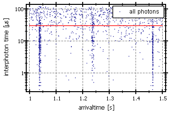
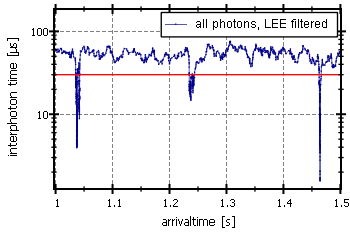
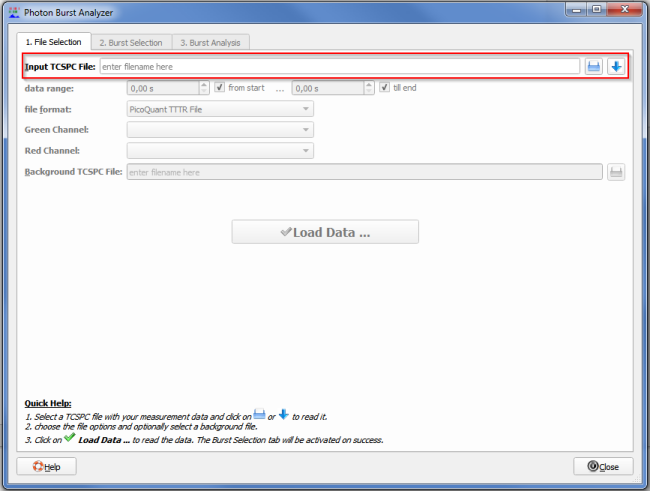
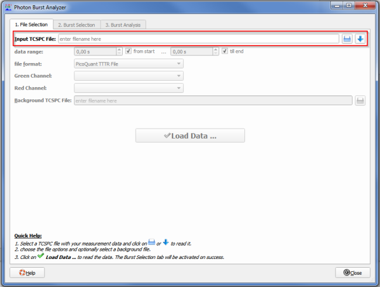
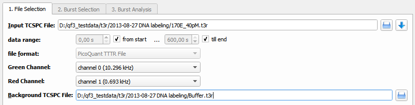
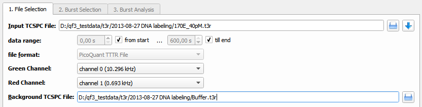
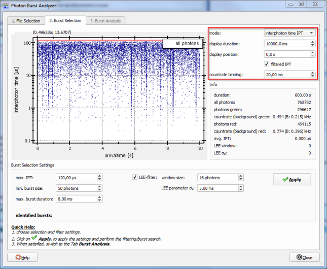
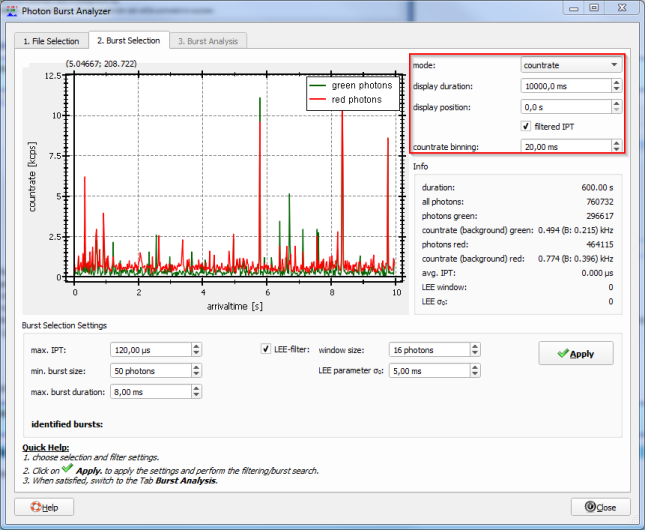
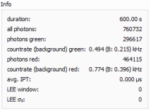

$$qf_commondoc_header.start$$ $$qf_commondoc_header.end$$
$$invisibleref:GANSEN08:Gansen A (2008) Chromatin at the Nanolevel. Dissertational Thesis. Available at: http://archiv.ub.uni-heidelberg.de/volltextserver/8342/1/Dissertation_Gansen.pdf $$
Introduction
Burst Analysis
This tool allows to read data from single-photon counting (or time-correlated single-photon counting, TCSPC) experiments. Then it tries to detect fluorescence bursts from single molecules passing the focus of the microscope, used for detection. This analysis assumes that two detection channels ("green"/"red") are used. The intensities in these two channels can then be used to calculate FRET-properties of the observed molecules. For each such burst, several properties are measured:
- when did the burst occur $(t_\text{burst})$
- burst duration $(\Delta t_\text{burst})$
- accumulated photon count $(N_g, N_r)$ during the burst in two detection channels (green/red)
- the photon countrate during a burst: $(\mbox{CR}=(N_g+N_r)/\Delta t_\text{burst})$
These are used to calculate additional burst properties together with additional data:
- background count-rates $(B_g,B_r)$ in the two channels
- crosstalk-coefficient $(\kappa_{gr})$ from the green into the red channel
- direct excitation rate $(f_{direct})$ of the donor fluorophore with the excitation wavelength
- FRET detection factor $[ \gamma=\frac{\eta_A\phi_A}{\eta_D\phi_D}, ]$where $(\eta_A,\eta_D)$ are detection efficiencies in the two channels and $(\phi_A,\phi_D)$ are the quantum yields of the acceptor and donor fluorophore.
The major burst-property is the FRET proximity ratio:
$[ P=\frac{N_A}{N_A+N_B} ]$
with the background-, crosstalk- and direct-excitation-corrected number of photons in the acceptor- and donor-channels:
$[N_D=N_g-B_g\cdot\Delta t_\text{burst}]$
$[N_A=N_r-(B_r+f_\text{direct})\cdot\Delta t_\text{burst}-\kappa_{gr}\cdot N_D]$
If in addition, the detection factor $(\gamma)$ is known, also the actual FRET-efficiency can be calculated
$[ E=\frac{N_A}{N_A+\gamma\cdot N_B}=\frac{1}{1+\gamma\cdot\frac{1-P}{P}}, ]$
which can be recalculated into a distance $(r_{DA})$ between donor and acceptor, if the Förster-radius $(R_0)$ of the fluorophore pair is known:
$[E(r_{DA})=\frac{1}{1+\left(\frac{r_{DA}}{R_0}\right)^6}]$
Burst Search
In order to perform a burst analysis, the bursts have to be identified first. This is done by a search algorithm, which relies on the interphoton-time (IPT) $(\delta t_i)$ between two consecutive photons $(i)$ and $(i+1)$. Inside bursts, the photons are spaced more closely, than during section with background only. This can be seen in the following interphoton time trace:

In this image, you can see three bursts, at approximately 1.04s, 1.23s and 1.46s. The burst search algorithm identifies bursts with the following properties:
- a bursts consists of at least $(N_{burst-min})$ photons
- the interphoton times inside a burst habe to be shorter than a maximum value of $(\mbox{IPT}_{burst-max})$.
- A burst has a maximum length of $(\Delta t_\text{burst-max})$
LEE-Filtering
The algorithm performance can be optimized, if the IPTs are filtered with a LEE-filter before applying the burst search. The LEE-filter smoothes out outlierst from the data. The IPT-trace above will look as follows if LEE-filtered:

The LEE-filter works as follows:
Each IPT is transformed:
$[ \delta t_i'=\overline{\delta t}_i+(\delta t_i-\overline{\delta t}_i)\cdot\frac{\sigma_i^2}{\sigma_i^2+\sigma_0^2} ]$
with:
$[\overline{\delta t}_i=\frac{1}{2m+1}\cdot\sum_{j=-m}^m\delta t_{i+j}]$
$[\sigma_i^2=\frac{1}{2m+1}\cdot\sum_{j=-m}^m(\delta t_{i+j} - \overline{\delta t}_{i+j})^2.]$
The LEE filter is then characterized by its two parameters:
- the window size $(2m+1)$
- the parameter $(\sigma_0)$, which is usually set to $(\sigma_0=5\;\mathrm{ms})$.
Usage/Tutorial
Basic Workflow
The basic usage of the tool works as follows:
- Start the burst analyzer by clicking Data Items | Insert Raw Data |
 TCSPC Burst Analyzer ... in the main window. $$note:The tool may also be started several times to compare the results from several input raw data files!$$
TCSPC Burst Analyzer ... in the main window. $$note:The tool may also be started several times to compare the results from several input raw data files!$$
- Select the TCSPC raw data file to be processed by clicking
 and wait until the further widgets are actiavted:

and wait until the further widgets are actiavted:

- Now you can perform some basic settings:
- You can specify a temporal data-range within the measurement, if you don't want to evaluate the full dataset.
- set which input channel detected green photons (default: 0, the avg. countrate for the different channels is shown in parantheses)
- set which input channel detected red photons (default: 1, the avg. countrate for the different channels is shown in parantheses)
- You can also specify a second TCSPC file (of the same dataformat!), which contains a background measurement (e.g. of the buffer without fluorescent molecules). The countrate in this file is average to yield $(B_g, B_r)$.
- Finally click on
to read in the sepcified datasets. $$note: If you change any of the settings above lateron, you will have to click this button again!$$
- Now you are presented with the second tab "2. Burst Selection" of the Burst Analyzer, which shows the interphoton time trace IPT of the measurement:
or the countrate trace of the measurement:

You can chhose how these are displayed on the top-right corner (red box) of the window. The IPT plot shows for each photon the duration until the next photon, agains the photons arrival time (macrotime). The countrate plot simply counts the number of photons in small time-bins (here 20ms) and shows the result trace. THe plot in this window shows only a fraction of the whole measurement. You can choose the length of this fraction ("display duration") and its position in the whole measurement ("display position") at the top-right. There you can also chose the bin width for the countrate trace.
Below the display mode settings, the dialog presents some basic statistics about the meausrement in the box "Info":

If you compare the countrate-trace and the IPT-trace, you can make out burst easily in each on. In the countrate, bursts show up as peaks, while in the IPT-trace they show up as groups of photons with low IPTs.
- Now you can configure and perform the burst search.
Multi-File Workflow
The basic usage of the tool works as follows
References
$$references$$